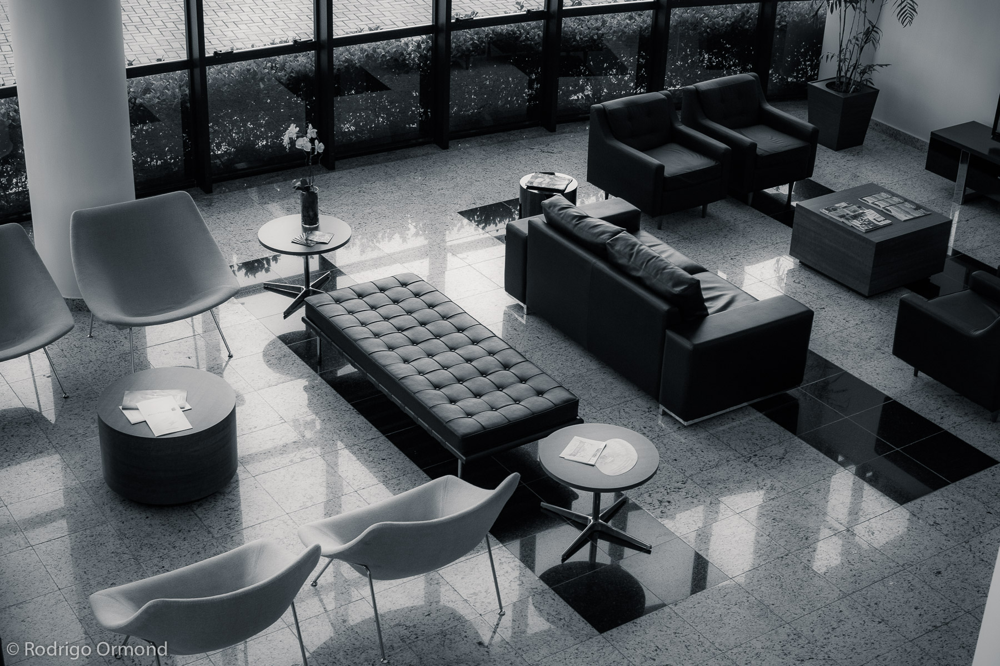

A Ibagy Imóveis é uma das maiores imobiliárias de Santa Catarina, com décadas de história e um portfólio que vai de apartamentos compactos a empreendimentos de alto padrão em Florianópolis, São José, Palhoça e região.
A parceria com a Ibagy surgiu da necessidade de criar imagens que transmitissem não apenas o espaço físico dos imóveis, mas o estilo de vida que cada empreendimento representa. A fotografia de arquitetura e interiores é, antes de tudo, uma ferramenta de venda — e cada detalhe conta.
O Desafio
Imóveis novos ou em lançamento precisam de imagens que ajudem o comprador a se imaginar morando ali. Isso significa mais do que fotografar paredes e pisos: é preciso criar atmosfera, trabalhar a luz natural, selecionar os ângulos que valorizam os espaços e garantir que cada ambiente comunique conforto e qualidade.


A Produção
Cada visita ao imóvel começa com uma leitura do espaço: identificamos os horários de melhor luz natural, os ângulos que ampliam visualmente os ambientes e os detalhes de acabamento que merecem destaque. Trabalhamos com iluminação auxiliar quando necessário, sempre buscando um resultado que pareça natural e elegante.
Para empreendimentos em lançamento, sem os imóveis prontos, trabalhamos com decorados e renders fotorrealistas integrados ao material de campanha, criando uma narrativa visual coerente do pré-lançamento até a entrega das chaves.
Resultado
As imagens produzidas para a Ibagy são usadas em portais imobiliários, anúncios digitais, redes sociais, materiais impressos e no próprio site da imobiliária. A qualidade visual se traduz diretamente em maior tempo de exposição dos anúncios e em leads mais qualificados.
"Uma boa fotografia de imóvel reduz o tempo de venda e aumenta o valor percebido pelo comprador."